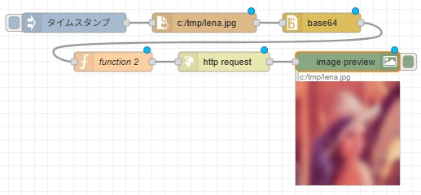

11th May 2025 at 2:25am
「opencv4nodejs」はNode.js上で画像処理ライブラリ「OpenCV」を利用するためのモジュールです。
本ページは、「Node-REDからopencv4nodejsを利用する手順を説明します」のページでしたが、残念ながらopencv4nodejsの更新が2020年で止まっています。
OpenCVはPython上で扱うのが非常に簡単だと思います。（最新のOpenCVを扱うことができます）Python上でHTTPサーバーやTCPサーバーを立ち上げて、Node-REDとやり取りをした方が効率的だと考えます。
ChatGPTに以下のような感じで質問すれば、良い感じで答えてくれますよ。
Python上で、HTTPサーバーをFLASKで立ち上げたい。POSTでBASE64の画像を受け取り、OpenCVで画像をぼかして返信する機能です。受け取るデータは、{"image":[Base64の画像], "kernel_size":[カーネルサイズ]}。kernel_sizeはぼかし量です。出来る？出来上がったPythonスクリプト以下の通りです。当然、質問するタイミングでコードは変わってくると思いますので、あくまで例として挙げておきます。
from flask import Flask, request, jsonify
import cv2
import numpy as np
import base64
app = Flask(__name__)
def decode_base64_image(base64_string):
img_data = base64.b64decode(base64_string)
np_arr = np.frombuffer(img_data, np.uint8)
img = cv2.imdecode(np_arr, cv2.IMREAD_COLOR)
return img
def encode_image_to_base64(image):
_, buffer = cv2.imencode('.jpg', image)
img_base64 = base64.b64encode(buffer).decode('utf-8')
return img_base64
@app.route('/blur', methods=['POST'])
def blur_image():
data = request.get_json()
if 'image' not in data or 'kernel_size' not in data:
return jsonify({'error': 'Missing image or kernel_size'}), 400
try:
img = decode_base64_image(data['image'])
k = int(data['kernel_size'])
# カーネルサイズは奇数である必要がある
if k % 2 == 0:
k += 1
if k < 1:
k = 1
blurred = cv2.GaussianBlur(img, (k, k), 0)
result_base64 = encode_image_to_base64(blurred)
return jsonify({'image': result_base64})
except Exception as e:
return jsonify({'error': str(e)}), 500
if __name__ == '__main__':
app.run(debug=True)
ちゃんと動作しましたよ。

function2の内容:
msg.payload={image:msg.payload, kernel_size:100};
return msg;これをベースに自分でチューニングしたり、ChatGPTに追加仕様を投げかけたりすれば良い感じで出来上がると思います。
もっと処理速度を上げたい場合はFLASKではなく、FastAPIを採用してみるのも良いかもしれません。